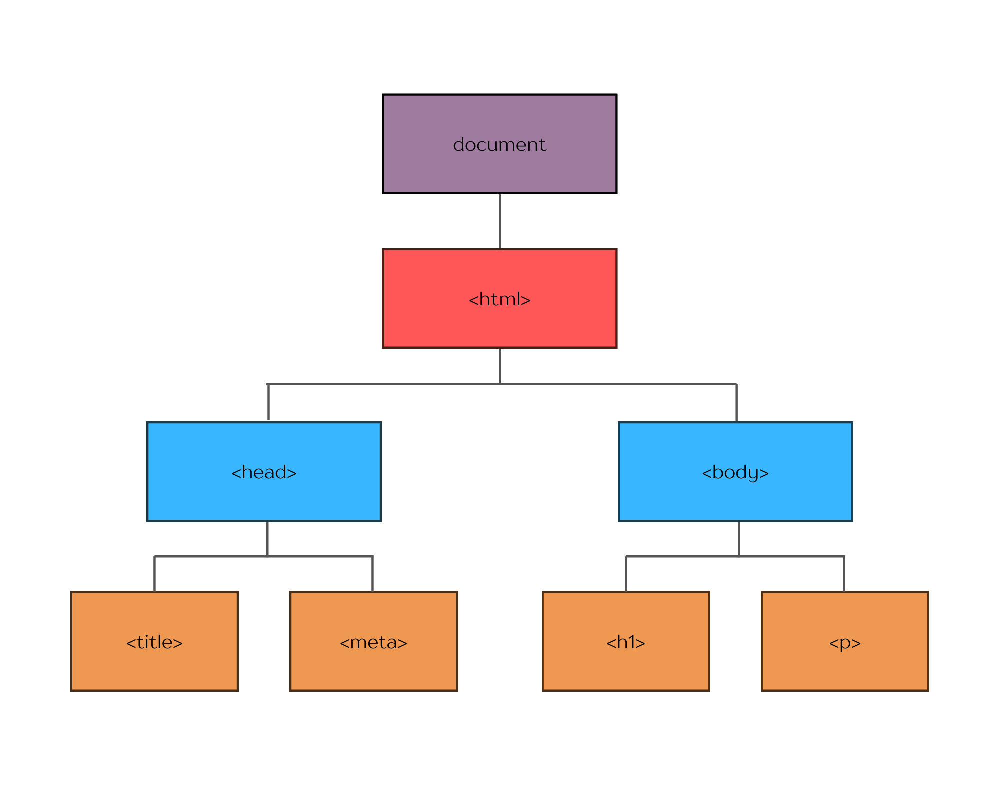
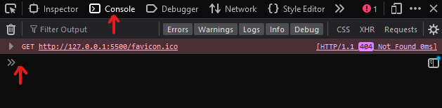

If HTML is the structure of the webpage, and CSS is the style, then Javascript would be the behaviour of a webpage.
Imagine HTML like the bones & muscles of a body, CSS as the outward features, and Javascript as the little electrical pulses that tell your body how to move about.
This is why Javascript is so useful. It allows the user to interact with the website; to click buttons, change styles, see cool animations. Javascript is able to do this by utilising what's called the Document Object Modle (DOM)
JavaScript has some built-in objects such as console, Math, Date, and document. To interact with HTML & CSS, we can take advantage of the document object. This. This structure is called the Document Object Model or DOM for short, and it will look something like this:

This is a representation of the tree-like structure of HTML in your webpage. Using Javascript, we can go down the objects and pick which elements we want to change in a page. For example, if you want the user to press a button to generate a random number. We would use Javascript and the DOM to generate a new, random number, and change the HTML to display the value to the user.
If it's a little hard to understand, just remember, the key takeaway is that using the DOM, Javascript can get, delete, and modify all of the HTML's elements.
As with any code, Javascript follows a certain syntax to access HTML elements/manipulate the DOM. JavaScript objects utilises dot notation and bracket notation.
First, let's look at dot notation.
Javascript has many properties we can access using dot notation. One of the more useful ones to look at when starting are .querySelector() and .querySelectorAll(), which you would write as follows:
document.querySelector('p')
document.querySelectorAll('p')
In the example above, I'm targeting the element 'p' in an HTML page. The first line would return the first instance of a p tag within the HTML, along with any text inside of the tags. The second line will return a list of every element with a p tag, and its contents.
Let's say we want to change the text in the very first p tag in our page. We can use the property .querySelector('p') and another property called .innerHTML which will access the text inside of the tag we retrieve.
document.querySelector('p').innerHTML = "Hello!"
This code retrieves the text content inside our very first p tag and changes it to our new text "Hello!". Want to try it out? Open up the devtools (ctrl + shift + i for Windows users) and press the console tab. Then, copy and paste the code above and hit enter. You'll notice the very first paragraph on this page changes!

This shows one of the many ways we can manipulate HTML using JavaScript's DOM.
Control flow is the order your computer runs code. It typically runs top to bottom, unless it hits any statement which interrupts this flow.
In JavaScript, loop, conditional, and function statements can disrupt the regular flow.
Loops are just that: loops. Imagine any task in which you need to repeat the same actions. For example, imagine refilling a sugar jar. You buy a bag of sugar, open it up, and pour it in the jar. Now, imagine your sugar jar is just ginormous. You need 3 x 1kg bags to fill the thing. Then, you'll repeat the same steps three times:
In coding, we would refer to this as a 'loop'. We can also call this loop by name (e.g Refilling the sugar jar) by creating a function, which I'll talk about later.
Javascript stores data differently. Objects and arrays store data a little differently than other variables, and are very useful depending on what information you want to save.
Objects can be used to represent multiple things with a common category. For example, let's say we want to save a customer's details - just their full name and age:
let customer = {
name: 'Bob',
age: 24
}
Great! Now if we want to find out our singular customer's age, we can use dot notation (customer.age) to return Bob's age.
If more people visit, we can actually store objects inside of this object to keep multiple customer's details!:
let customers = {
firstCustomer = {
name: 'Bob',
age: 24
}
secondCustomer = {
name: 'Jane',
age: 26
}
}
Basically, objects are a great way to store multiple pieces of information about a singular 'thing'.
Arrays are like lists or objects with only keys. Using square brackets (instead of curly brackets) we can store an array of any items, or any group of items.
const groceries = ['cheese','bread','ice'];
To access these values, we use square bracket notation and indexing from 0 to specify what item in an array we want:
const groceries = ['cheese','bread','ice'];
console.log(groceries[0]) //outputs 'cheese'
And, finally, functions! What are they? They're just methods. We write a method - like how to refill an empty jar of biscuits. When we want to run the function (or have the jar of biscuits refilled) we call out the method (tell someone to go and do it).
Take a look at the function below.
let cookies = 0;
function addACookie() {
cookies++
}
addACookie()
So, we've set up a cookie counter and we've made a function. The function has one line of code which adds +1 to the cookie counter. At the end of the code, we call the function. When we call it, it runs the code nested inside.
Everytime we want a cookie added to the jar, we can call the function addACookie and it will add to the counter!
Functions help define a specific process which we may want to repeat multiple times during specific circumstances, and is a very powerful tool.